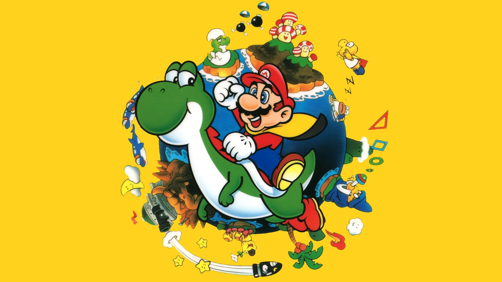
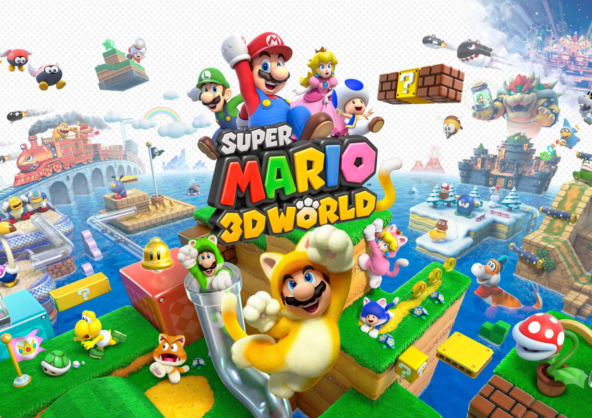
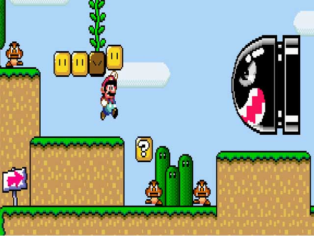
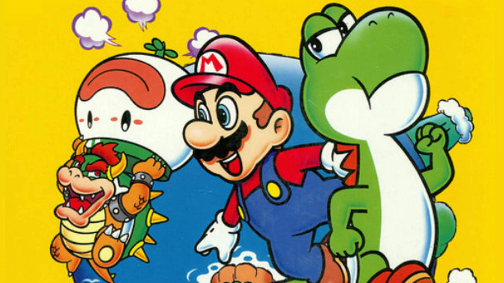

Super Mario World": Celebrando décadas de diversão e aventuras icônicas!

Inicio




Um dos jogos mais icônicos da história dos videogames, "Super Mario World", continua a encantar jogadores de todas as idades, mesmo após décadas de seu lançamento original. Este clássico intemporal da Nintendo, lançado em 1990, permanece como um marco importante na indústria de jogos eletrônicos e uma referência para jogos de plataforma.
Com sua jogabilidade cativante e inovações revolucionárias para a época, "Super Mario World" apresentou aos jogadores o mundo colorido e diversificado do Reino dos Cogumelos. A jornada épica do encanador bigodudo Mario e seu fiel companheiro, o dinossauro Yoshi, conquistou corações com seus níveis criativos, desafios emocionantes e personagens memoráveis
Com gráficos vibrantes e músicas cativantes, "Super Mario World" transportou os jogadores para uma aventura cheia de surpresas e segredos a cada esquina. A introdução do mundo interconectado permitiu uma exploração profunda e recompensadora, enquanto novos power-ups como a capa de Super Mario e a transformação em Yoshi adicionaram camadas emocionantes à jogabilidade.
Mesmo após todos esses anos, a influência de "Super Mario World" permanece evidente em muitos jogos modernos de plataforma. A abordagem inteligente de design de níveis e a capacidade de oferecer diversão atemporal são razões pelas quais o jogo continua sendo uma parte vital da cultura dos jogos até hoje.
Portanto, enquanto os anos avançam, "Super Mario World" permanece uma joia preciosa na rica história dos videogames. Seja para os fãs que se lembram com nostalgia de suas primeiras aventuras no Reino dos Cogumelos ou para os jogadores que estão experimentando a magia pela primeira vez, a jornada de Mario e Yoshi continua a ser uma experiência inesquecível que transcende gerações.